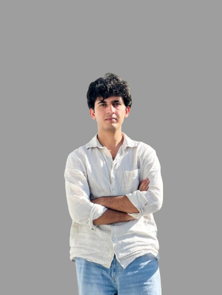

My education
I am pursuing a Bachelor of Science in Computer Science at Iqra University, Islamabad Campus, where I am developing my technical knowledge and problem-solving abilities.
BS Computer Science Student · Data Engineering
I am a Computer Science student with a strong interest in Data Engineering. I enjoy working with databases, organizing and transforming data, and understanding how data pipelines move information efficiently. I am continuously developing my skills in SQL, Python, data processing, database management and building reliable data solutions.

A little introduction
I believe progress comes from staying curious, practising consistently and being open to new challenges.
I am pursuing a Bachelor of Science in Computer Science at Iqra University, Islamabad Campus, where I am developing my technical knowledge and problem-solving abilities.
My interests include Data Engineering, SQL, Python, databases, data processing, ETL pipelines, programming, gaming, fitness and exploring historical places.
My goal is to become a skilled Data Engineer who can design efficient data pipelines, manage reliable databases and transform raw data into meaningful information.
My philosophy
Learning is a journey, and every project is another opportunity to grow.